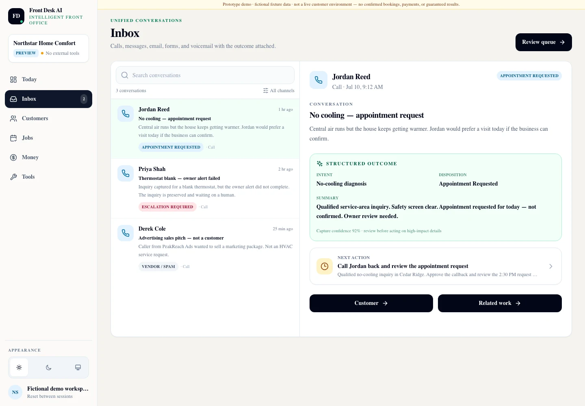

Separate Business Line
Business Solutions
A toolkit of small-business apps that all write into one client record — so a customer is entered once and every later step refers to the same file instead of a re-keyed copy of it.
Modular Toolkit · One App at a Time
- Client Hub is the shared core
- Activate only the apps you need
- Owner keeps final authority
Start with the leak, not the suite
Nobody buys an “all-in-one suite” because a brochure asked them to. You start with the part of the business that is visibly losing work — missed calls, scattered follow-ups, slow quotes, rebuilt paperwork — and the record you create stays in one workspace as you add more.
This is a separate business line from CueForge's live-production tools. It serves small-business owners, not touring productions.
02
The connective core
Every app writes into the same client record
The differentiating claim is not feature count. It is continuity: whichever app you switch on first, the customer, the opportunity and the history it creates belong to Client Hub, and the next app you add inherits them.
-
Front Desk AI
Inbound calls become structured opportunities with an owner-reviewed next action.
Managed offer
-
Quote Tracker
Opportunities become versioned quotes with a real follow-up state.
In development
-
InvoicePack
Finished work becomes invoice and work-packet drafts, built locally.
Private validation
Shared record layer
Client Hub
The operating core every other app reads from and writes to. It is what makes the record continuous rather than copied between tools.
- customer
- opportunity
- job
- task
- note
- activity history
Included with any active paid module. Client Hub is not currently offered as a standalone CRM and has no separate price. Cancelling an app does not delete your customer or financial history.
03
The toolkit
Pick the app that fixes this month's problem
Each app states its own readiness. None of them borrows another's, and none of them is a prerequisite for the rest.
-

Front Desk AI
Managed offer
Turn missed calls into durable opportunities and owner-approved next actions. A call that would have gone to voicemail becomes a structured record with the customer, the request, the location, the timing, the urgency, a concise summary, the questions that went unanswered, and a recommended next action.
Available through guided managed setup, not self-service signup. Front Desk creates or updates an opportunity; it never issues a binding quote and never commits you to work. It is optional — the suite does not require it. The preview shown here is a fictional-data product capture from a private synthetic-data rehearsal workspace.
Open the Front Desk AI dossier -

InvoicePack
Private validation
Build invoice and work-packet drafts locally — rate profiles, receipts, generated documents and archives, backup and restore, and a structured status designed to flow back into the shared record.
Raw source documents and receipt files stay on your machine by default; only the minimum structured status is intended to be shared, and that handoff is not built and accepted yet. A local-first candidate under private validation — no public distribution, no signed build claim and no price. The preview shown here is cropped from exact synthetic local-vault runtime evidence.
Open the InvoicePack dossier -
customer · opportunity
job · task · note
activity historyClient Hub
Shared core
Customers and contacts, opportunities, jobs, tasks and next actions, notes, and one activity history that every other app writes into.
Explained in full in chapter 02 above. Included with any active paid module; not sold on its own and not separately priced.
-
draft · sent · viewed
accepted · declined
expiredQuote Tracker
In development
Turn an opportunity into a versioned quote with a real follow-up state and an owner-reviewed acceptance path — sent, viewed, accepted, declined or expired. An accepted quote creates the job; it does not silently issue an invoice.
Quotes can start from a call, a form, a manual entry or an import. They never require the phone app. There is no dedicated page yet because no public-safe interface evidence has been accepted, and no price is approved.
No dedicated page until its evidence is accepted
—
Roadmap
Named honestly, and not promised
These are directions, not commitments. None of them has a price, a launch date, a dedicated page or a claim of readiness. Several exist specifically to be validated against real demand before anything is built.
Calendar & Booking
Scheduling and booking, once the shared platform and its integrations are accepted.
Planned
Landing & Intake
Structured customer and service intake captured straight into Client Hub.
Planned
Routes
Route planning and field workflow, only after customer demand and scope are accepted.
Planned
Job Profitability
Connect verified quote and invoice data to owner-visible margin per job.
Validate demand first
Inventory Alerts
Bounded operational inventory attention, when a real customer workflow supports it.
Validate demand first
04
The record's life
The inquiry becomes the opportunity, and keeps its identity all the way to the invoice
Whichever apps you have switched on, the steps below happen against one record. The ones you have not switched on simply stay manual — they do not break the chain.
-
01
Inquiry
A call, a form, or a manual entry arrives and becomes a real customer record in Client Hub.
-
02
Opportunity
The request, the location, the urgency and the next action are captured in structured form rather than in a notebook.
-
03
Quote
A versioned quote is drafted, sent, followed up and accepted or declined — with the owner reviewing the acceptance.
-
04
Work
An accepted quote becomes a job that is ready to invoice when it is finished.
-
05
Invoice
The invoice and its supporting documents are built from what was already agreed, not retyped from it.
-
06
Owner action
What needs a decision surfaces as a decision — nothing consequential is sent on your behalf.
05
Trust boundaries
What the software will not do without you
Owner authority
- Consequential actions surface on a dashboard for a decision rather than executing quietly
- Nothing commercial is auto-sent — no automatic quotes, no automatic invoices, no automatic commitments
- Contact and follow-up records stay under manual authority; the software proposes, you approve
- Automation that does run is visible and auditable
Data and access
- Raw private documents stay local by default rather than being uploaded
- Integrations are set up with you, not silently connected on your behalf
- Cancelling an app does not delete your customer or financial history
- Every app states its own readiness; none of them borrows another's
Next step
Start with the part that is costing you work.
The useful first conversation is not a tour of every feature. It is a short walk through where customer details live today, how you know who needs a callback, what happens to calls while you are working, and what has to be re-entered when a quote becomes an invoice.
From that we recommend the smallest credible starting point — often one app — and say plainly what is not ready.